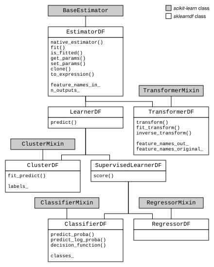

sklearndf#
Data frame support and feature traceability for scikit-learn.
sklearndf augments more than 160 scikit-learn estimators for native support of data frames, while leaving the original API intact.
Augmented scikit-learn classes are named after their native scikit-learn counterparts,
with DF added as a suffix:
SimpleImputerDF takes the place of SimpleImputer,
RandomForestRegressorDF takes the place of
RandomForestRegressor, and so on.
For all methods expecting an X argument for a feature matrix and potentially a
y argument for one or more targets, sklearndf estimators expect a pandas
DataFrame for X and a pandas Series for a
1‑dimensional y, or a pandas DataFrame for y when fitting to
multiple targets or outputs.
This includes methods such as fit(),
transform(), and predict().
All estimators enhanced by sklearndf also implement an additional attribute
feature_names_in_, keeping track of the column names of the data
frame used to fit the estimator.
sklearndf transformers also implement attributes
feature_names_out_ and
feature_names_original_, keeping track of the feature names of
the transformed outputs as well as mapping output features back to the input features.
This enables tracing features back to the original inputs even across complex
pipelines (see also PipelineDF).
sklearndf classes implement a class hierarchy that follows the taxonomy of scikit-learn classes (but is only partially reflected via class inheritance in the original scikit-learn implementation):

all sklearndf transformers are subclasses of
TransformerDF, which in turn provides the API for all common transformer methods, e.g.,transform()all sklearndf clusterers are subclasses of
ClusterDF, which in turn provides the API for all common clustering methods, e.g.,fit_predict()all sklearndf regressors are subclasses of
RegressorDF, which in turn provides the API for all common regressor methods, e.g.,predict()all sklearndf classifiers are subclasses of
ClassifierDF, which in turn provides the API for all common classifier methods, e.g.,predict_proba()all sklearndf regressors and classifiers are subclasses of
SupervisedLearnerDFall sklearndf regressors, classifiers and clusterers are subclasses of
LearnerDFall sklearndf estimators are subclasses of
EstimatorDF
sklearndf introduces additional pipeline classes RegressorPipelineDF,
ClassifierPipelineDF, and ClusterPipelineDF, with an abstract base
class LearnerPipelineDF, to allow for easier handling of common types of ML
pipelines.
These classes implement pipelines with two steps – one preprocessing step, followed by
a learner as the second and final step.
sklearndf also provides data frame support for a selection of custom or 3rd-party
estimators, most notably BorutaDF, LGBMRegressorDF,
LGBMClassifierDF, XGBRegressorDF, and XGBClassifierDF.
All sklearndf estimators are fully type hinted.
Please see the release notes for recent API updates and bug fixes.
Classes#
Base class for augmented scikit-learn classifiers. |
|
Base class for augmented scikit-learn clusterers. |
|
Base class for augmented scikit-learn estimators. |
|
Base class for augmented scikit-learn learners. |
|
Base class for augmented scikit-learn regressors. |
|
Base class for augmented scikit-learn supervised learners. |
|
Base class for augmented scikit-learn transformers. |
Submodules#
Extended versions of all scikit-learn classifiers with enhanced support for data frames. |
|
Extended versions of scikit-learn clusterers with enhanced support for data frames. |
|
Extended versions of all scikit-learn pipelines with enhanced support for data frames. |
|
Extended versions of all scikit-learn regressors with enhanced support for data frames. |
|
Extended versions of all scikit-learn transformers with enhanced support for data frames. |
|
Wrapper class API for enhancing the functionality of native estimators conforming with the scikit-learn API. |